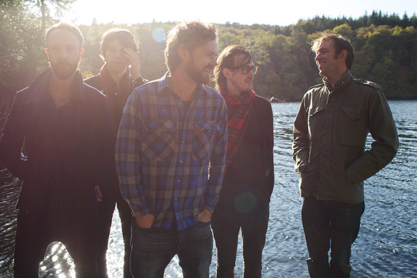

A Modern Return: Idlewild Interviewed

It’s a common tale heard time and time again. A band is on the brink of massive success, decides to incorporate a big-tent sound but in their own way, and gradually disappears from the limelight. Much adored Scottish act Idlewild were literate punks who once stumbled into the arena festival circuit with their 2002 release The Remote Part, only to find themselves out of it in the shut of an eye. They could’ve taken the easy route, “the “Coldplay guide to success” as they say (who were label mates for a brief number of years), but if they going to make bold statements it was going to be under their own terms. That stubbornness practically saved them, though it took them years of trying to retrace their steps to see that they operated in a much smaller scale.
After a five year hiatus, during which main Idlewild songwriters Roddy Woomble and Rod Jones explored other projects, they’ve brought back the Idlewild name with their latest Everything Ever Written. It’s an all-encompassing summation of their body of work, not a maturation but a genuine portrayal of what they’ve always aspired to sound like. The album was written on the Isle of Mull, achieved without any constraints or label pressures, candidly documented in a series of photographs on diverse social media platforms.
In this interview with Rod Jones, we discuss what lead the band to revitalize the Idlewild name, treading a thin line between nostalgia and novelty and how they see themselves after a significant hiatus.
At which point did the band finally knew that it was time to write a new batch of songs after such a long hiatus. What importance do you ascribe to the Idlewild name as opposed to all your numerous side projects?
Roddy and I had been in touch over the break and listening to each other’s albums, and around two years ago we were both free and in the same place and it just felt quite naturally like we wanted to write together again. There was no real plan other than just getting together and seeing what happened. We put down a lot of ideas quite quickly, ideas that started to have the feel of an Idlewild album. Even more so when we got Colin [Newton] involved, and the dynamic between us just gelled together again. Bringing in Lucci [Rossi] on keys and latterly Andrew [Mitchell] on bass gave the songs a new and exciting life and feel; we now felt like a new band with endless possibilities.
The band entity or name obviously has a weight to it, which perhaps to the end of the last incarnation, had become something that was restricting us to some extent. Things started to feel a little stale and laboured. With time away, however, and the opportunity to make music away from this, we have been greatly encouraged by the response and enthusiasm for the band again and making music together has become exciting and fresh.
Having been distant with each other prior to the writing of Everything Ever Written, how did you all retrace your steps to get back into the groove of things?
There was no formula or method to this, which I think was really important. Almost to put to bed the previous ways and constraints and come back to it with a blank page and openness allowed us to make a record that we felt was more natural. There is, however, a dynamic and relationship between myself, Roddy and Colin that just works in a certain way, which just naturally happened when we got together again. I suppose this is what makes it an Idlewild record.
In recent interviews, the band has made mention of how the new album shows a more mature sound. Which strikes me as a bit of a misnomer, since, in my ears, it’s been a core aspect of every Idlewild album ever since Warnings/Promises. How does the band approach maturity in this album as opposed to all the ones that got you to where you are now?
I think mainly the fact that we are all more confident and comfortable in ourselves, which just comes with age and experience. Also, the time away from the band made us feel less concerned with the past and the nostalgia of previous records. Less a need to rediscover our past and more able to look to the future and new ideas.
One thing I’ve always liked about you guys is that you embrace your more rough-edged leanings of the past as much as your current folk-driven sound. Was it a challenge to coalesce both in the new record, seeing as it intends to mesh both in such seamless fashion?
As I mentioned earlier, this was not the concern or intention with this record at all, but there is, by the very nature of the blend of personalities involved, a thread to our earlier work. We still have like-minded musical interests, many of the same records and musicians we liked when making our early albums, but now this is thrown in with many more influences, life experiences and collaborators. It just gives it a richer, more interesting depth to the music, I feel. There is no formula for us to put all this together, it just happens.
Idlewild has never been afraid of writing an unabashedly sweet ballad, and this time it’s album highlight Every Little Means Trust. What is it about this kind of radio-friendly track that still appeals to the band as a whole, especially considering there isn’t really any pressure for a high placing in the singles chart anymore? It seems you’re all content with the final outcome, regardless of how the album is ultimately received.
It’s something we don’t think about, really. It’s a song we wrote early on in the process that is just really strong melodically and was always going to make it on the record. There definitely is a "radio friendly" feel to it, I agree, but this is not of intentional design. We have always had an element of this style in the music we make and this is not something we embrace or shy away from. We have a very varied music taste as a band and this is just a reflection of that.
It strikes me how so many modern Scottish bands have gone to emulate your hyper-literate lyrics throughout the years. Seeing as you’ve influenced so many from the place you’re still based, which artists were you taking cues from in your early days? And does it feel strange to see a mirror of your past selves translated in other younger, like-minded artists?
More probably a question for Roddy here, but certainly the blend of intelligent lyrics and melodic music has been something that has always been at the core of the band. People like Dylan, The Smiths, REM and Neil Young, to name a few, have had an influence in this way. It is certainly something we didn't invent but to see some newer bands reference us as influences now is obviously very heartwarming and flattering.
With the release of Post Electric Blues in 2009, you implemented the idea of self-releasing it a few months before its official release via your own website, something that was quite novel at the time and has since become a standard way of marketing new music in the current age. What did you learn from this experience, and how do you approach it now as opposed to back then?
At the time it was really about trying to connect more with our fans and involve them more in the process, which I think makes people care more about the music and albums as a whole rather than a collection of singles. Obviously, with the ever changing music industry, this has become a pretty standard way for bands to make and sell records which is great. Giving control back to the musicians and a platform to get their music out there. Don't get me wrong, though, we needed the support of a major label to get to where we are and this is something we are very thankful for. It’s a shame that very few bands have this helping hand these days when they are starting out and finding their feet.
This time round we had already made the album and decided a direct to fan pre-order would just be a good, organic way to get the album to our fans before the standard release. It’s just a good way for fans to get involved.
Considering the quiet lives you’ve lead before the writing of the new record, what expectations do you have in taking these songs on the road? And what do you hope to achieve once you’ve completed the “album cycle”?
I wouldn't say quiet lives, so much as myself and Roddy have been writing and touring our own records for a good few years in the gap, and I've been busy working on producing other musicians, but it certainly will be a shock to the system to get in front of an animated Idlewild crowd again. I have no idea what that will feel like, to be honest, but it will be exciting I'm sure. As for what we want to achieve, I’d just say to play some good shows and go to some new places. Who knows what will happen. Much more to follow, I hope.
28 January, 2015 - 18:22 — Juan Edgardo Rodriguez